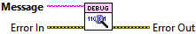

Error In describes error conditions that occur before this node runs. With the following execption, this input provides standard error in functionality.
This node runs normally even if an error occurred before this node runs.
Creates a logging statement from a message string with the DEBUG level. The statement is created even if an error is passed to the Error In terminal. The logging level must be five (5) or higher for this statement to be received by listeners. A logging statement is a comma-separated values (CSV) line containing an ISO 8601 timestamp, the level name ("DEBUG"), the name of the origin VI, and the message.

|
|
Error In describes error conditions that occur before this node runs. With the following execption, this input provides standard error in functionality. This node runs normally even if an error occurred before this node runs. |
|
|
Message is the text for the last column of the Comma-Separated Values (CSV) line in the logging statement. This is user defined. The rest of the CSV line is generated automatically. |
|
|
Error Out contains error information. This output provides standard error out functionality. |